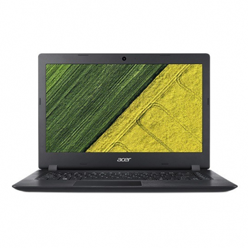

|  | ||||||
Acer je jedan od vodećih proizvođača laptopova na svetskom nivou. Posebno veliko učešće imaju u segmentu tržišta nižeg cenovnog ranga. Kao uspešna kompanija, koja je bila u konstatnom porastu u poslednjih 10 godina, Acer je u svoje vlasništvo uzeo i kompanije koje nisu toliko dobro uspele da se snađu na tržištu. Tako laptopove ove firme možemo kupiti pod brandom Acer ali i pod brandovima eMachines, Gateway, Packard Bell. eMachines uglavnom predstavlja sinonim za laptopove najnižeg cenovnog ranga i oni se prodaju po celom svetu paralelno sa Acerom samo u slabijim konfiguracijama (slabijim procesorima, manje RAM memorije itd.) kako bi zadovoljili potražnju za laptopovima ovakvih performansi. Gateway i PackardBell su brandovi koji su imali veliku popularnost na Američkom tržištu. Tako da je Acer nastavio da proizvodi laptopove pod njihovim imenima da bi na što bolji način zadržao veliki udeo na profitablinom Američkom tržištu. Ovi laptopovi mogu se javiti i sa jačim konfiguracijama nego sam Acer, pa čak i u lepšim kućištima. |
||||||
Acer laptopovi su uglavnom dobrog kvaliteta u odnosu na svoju cenu. Standardni kvarovi koje smo susretali na njima uglavnom su kvarovi koji su zajednički za sve laptopove (neispravni HDDovi, tastature, memorije..). Što se ploča tiče, tu su standardno grafički čipovi, AMD čipsetovi. Noviji modeli Acer-a su počeli da dolaze sa oštećenim nosačima šarki. Isto tako, javljaju se i sa oštećenim konektorima napajanja. Nekada su ovi kvarovi kombinovani. Naravno, ove kvarove možete vrlo brzo i uz garanciju popraviti u našem servisu. |
||||||